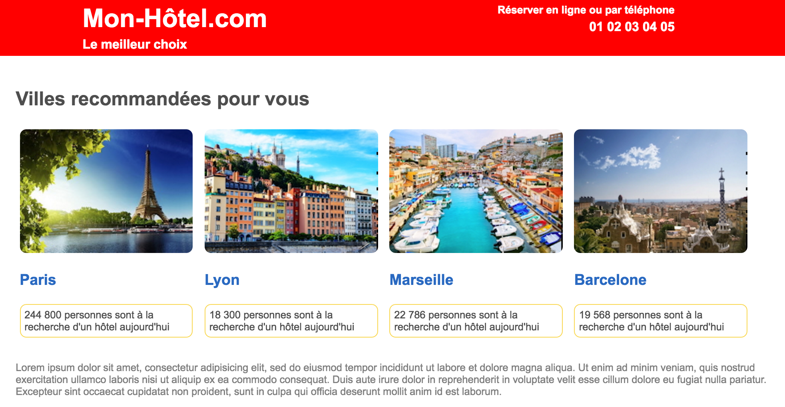
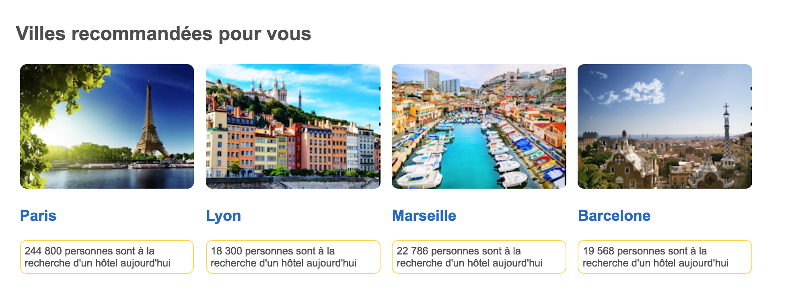
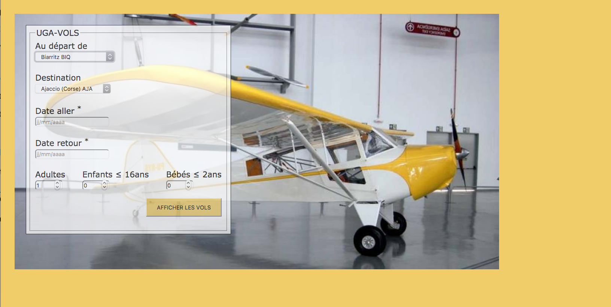
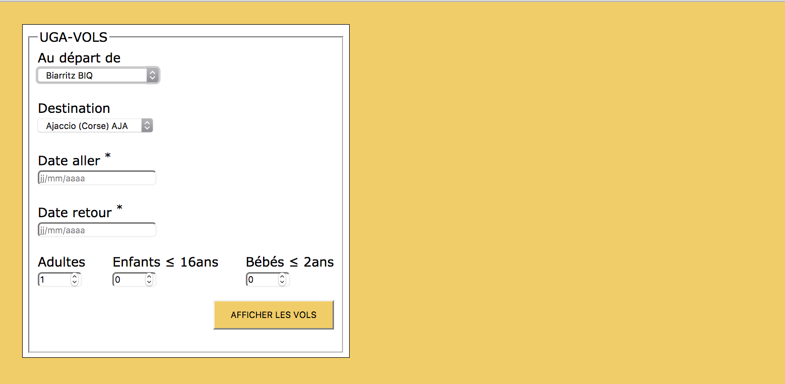
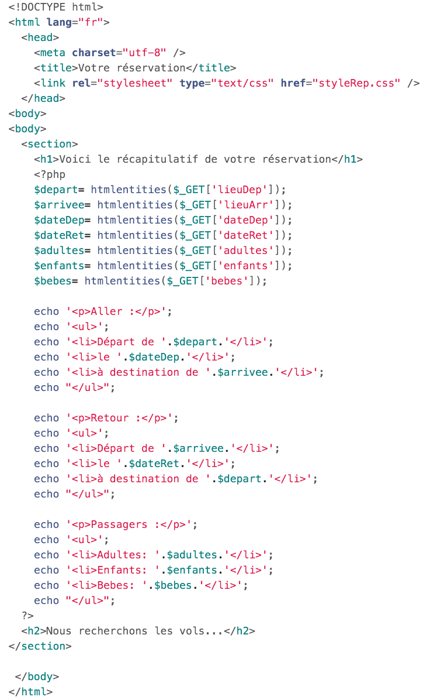

Université de Grenoble Alpes - IUT2 - Département informatique
M1105 - Web
Révisions (travail personnel)
Objectifs
- Se préparer à l'examen final
Ce document est consultable sur la plateforme Chamilo du département.
Préparation
- Créer un répertoire Revisions dans votre répertoire M1105
- Se positionner dans ce répertoire Revisions
- Recopier dans votre répertoire Revisions le contenu du répertoire /users/info/pub/1a/M1105/Revisions
Extrait examen n°1 - site Voyage
Le sous-répertoire qui contient l'ensemble des fichiers s'appelle voyage
Vous allez réaliser, en plusieurs étapes, la page suivante:
Etape 1: l'entête et le menu
Complétez les fichiers entete.html et entete.css
Voici ce que vous devez obtenir :
A respecter:
- la page est centrée et occupe 90% de la largeur de la fenêtre
- la page est structurée en 2 divisions principales: "header" (pour le logo et le titre "h1"), "nav" (pour le menu sous forme de liste "ul")
- la police de caractères est Times et à défaut serif
- pour le titre "h1" et pour le menu, on utilisera une variante "petites majuscules"
- chaque item du menu aura une largeur de 100px
- au survol, les liens du menu ont un fond rouge et la police sera en blanc
(comme montré ci-dessus)
- vous utiliserez le positionnement flex pour mettre côte à côte les items du menu
- et pour le reste, faites en sorte que cela ressemble à ce qui est demandé!
Etape 2: le formulaire sans css
Complétez le fichier formulaire.html
Voici ce que vous devez obtenir :
A respecter:
- le passage de paramètres se fera par "get" et le programme appelé s'appelera "resa.php"
- il y a 2 "fieldset"
- il y a des boutons radio, 3 listes déroulantes, et un champ "date"
- Remarque: vous choisirez vous-même les options pour les menus déroulants
- pour le champ date: il sera rendu obligatoire et vous ajouterez un attribut qui donne une indication pour le format de date: "jj/mm/aaaa"
- Voici le nom des variables que vous devez utiliser:
- pour la prestation: "choix"
- pour la destination: "dest"
- pour la ville de départ: "vdep"
- pour la durée: "duree"
- pour la date de départ: "ddep"
- et pour le reste, faites en sorte que cela ressemble à ce qui est demandé!
Etape 3: CSS du formulaire
Complétez le fichier formulaire.css
Voici ce que vous devez obtenir :
Indications:
- le formulaire fait 320px de large
- la bordure des "fieldset" est supprimée
- les champs sont alignés
- et pour le reste, faites en sorte que cela ressemble à ce qui est demandé!
Etape 4: intégration
A partir de ce que vous avez fait précédemment, complétez les fichiers final.html et final.css
On rappelle ce que vous devez obtenir :
Extrait examen n°2 - site Hôtel
Le sous-répertoire qui contient l'ensemble des fichiers s'appelle hotel
On vous demande de réaliser la page d'accueil d'un site (hotel.html) ainsi que sa feuille de style (styleHotel.css).
La voici:

Voici ce que vous devez respecter :
- Votre design devra être fluide pour que votre page s'adapte automatiquement à la taille de la fenêtre (dans la limite du raisonnable!)
- vous utiliserez le positionnement "flex"
- le site occupe toute la largeur de la fenêtre
- la police de caractères est Arial, Helvetica ou à défaut sans-serif
- les couleurs utilisées sont le rouge, un bleu foncé, un jaune orangé, un gris foncé, ...
Recommandation :
On vous recommande de commencer par mettre en place la partie centrale de la page:

Extrait examen n°3 - site Vol
Le sous-répertoire qui contient l'ensemble des fichiers s'appelle vol
On souhaite réaliser la page suivante:

Nous allons travailler en 2 étapes :
- Réalisation du formulaire (formulaire.html et styleFormulaire.css)
- Réalisation de la page complète (vol.html et styleVol.css)
Etape 1: Réalisation du formulaire (formulaire.html styleFormulaire.css)
Voici ce que vous devez obtenir (voir les indications ci-dessous):

Afin d'obtenir ce résultat, voici quelques indications :
- Commencer par étudier le code de la page réponse (reponse.php) pour mettre en accord votre formulaire:

- la police de caractères est Verdana et à défaut sans-serif
- la couleur de fond est #F0CD68 (jaune moutarde)
- le formulaire aura 400px de large
- vous utiliserez des menus déroulants pour les aéroports de départ et d'arrivée, et des éléments input de type "text", "number", "submit"
(vous n'utiliserez pas d'élément input de type "date" qui n'est pas supporté par tous les navigateurs )
Attention: ne pas oublier les attributs "id" et "for" pour relier "label" et "input"
- les labels qui sont suivis d'une " * " correspondent à des champs qui devront être rendus obligatoires
- les aéroports de départ seront proposés ainsi:
- Biarritz BIQ
- Brest (Bretagne) BES
- Grenoble GNB
- Lyon LYS
- Nice NCE
- les aéroports d'arrivée seront proposés ainsi:
- Ajaccio (Corse) AJA
- Brest (Bretagne) BES
- Bordeaux BOD
- Nantes NTE
- Toulouse TLS
- pour le symbole " ≤ " vous utiliserez directement son encodage UTF-8: voir le site https://www.w3schools.com/charsets/ref_utf_math.asp
- et pour le reste, faites en sorte que cela ressemble à ce qui est demandé!
Etape 2: Réalisation de la page complète (vol.html et styleVol.css)
Réaliser maintenant la page avec l'image de l'avion "avion-970-513.jpg".
Vous réutiliserez bien évidemment ce que vous avez fait avant.
Pour la transparence, vous utiliserez une opacité d'une valeur < 1